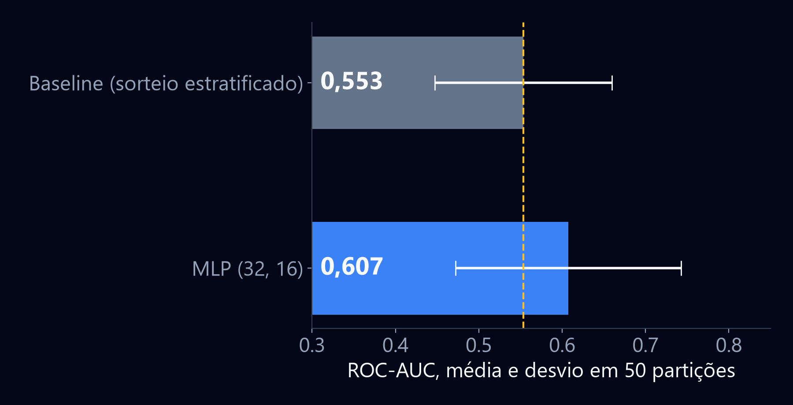

A diferença é menor que um desvio-padrão. Árvore, floresta e XGBoost ficaram no mesmo teto.
O que a rede mostrou: o limite está no dado. São 14 casos críticos.
Investir em apólices e telemetria, não em outro algoritmo.